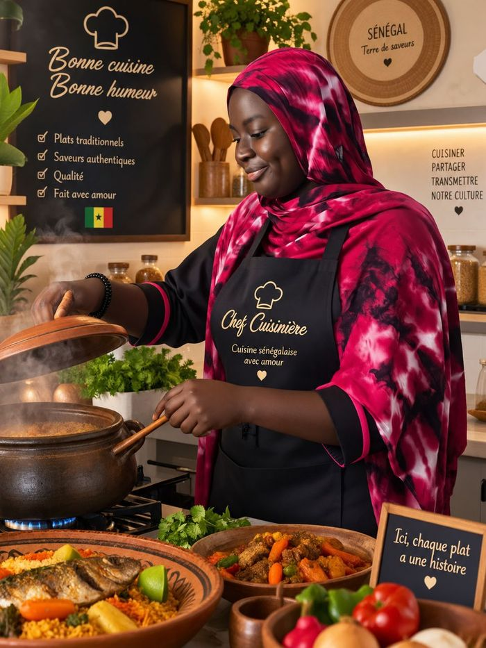
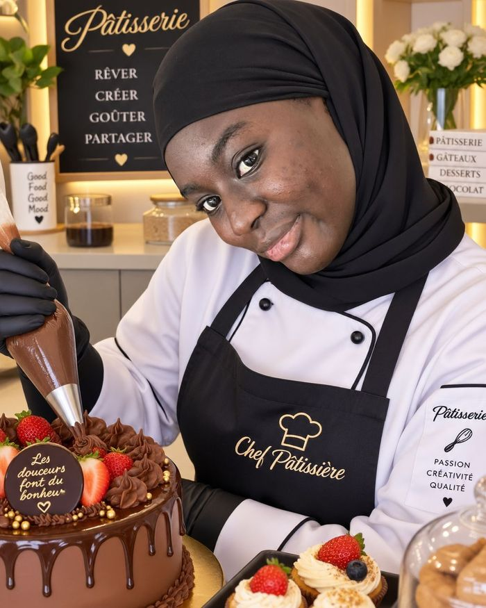

En dehors de l'écran, je suis une cuisinière et pâtissière passionnée — un terrain où j'exprime la même créativité et la même exigence que dans mes projets techniques.

Cuisine sénégalaise traditionnelle
Plats traditionnels, saveurs authentiques, préparés avec des produits de qualité — chaque recette raconte une part de notre culture.

Pâtisserie & gâteaux sur-mesure
Gâteaux, cupcakes et desserts personnalisés — rêver, créer, goûter, partager.
Savoir-faire
Ce que je cuisine
🍲
Cuisine traditionnelle
Plats sénégalais (riz, poisson, viande mijotée)
Recettes familiales transmises
Cuisine faite maison, avec amour
🎂
Pâtisserie
Gâteaux d'anniversaire & d'occasion
Cupcakes & desserts personnalisés
Décoration & finitions soignées
💫
Approche
Créativité & sens du détail
Qualité & authenticité
Chaque plat a une histoire
Passionnée autodidacte — certifications culinaires à venir.